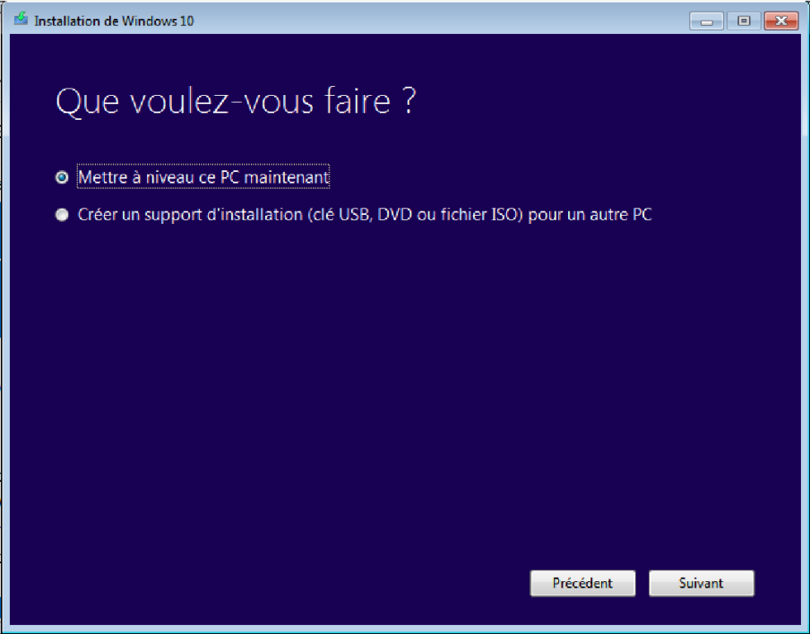
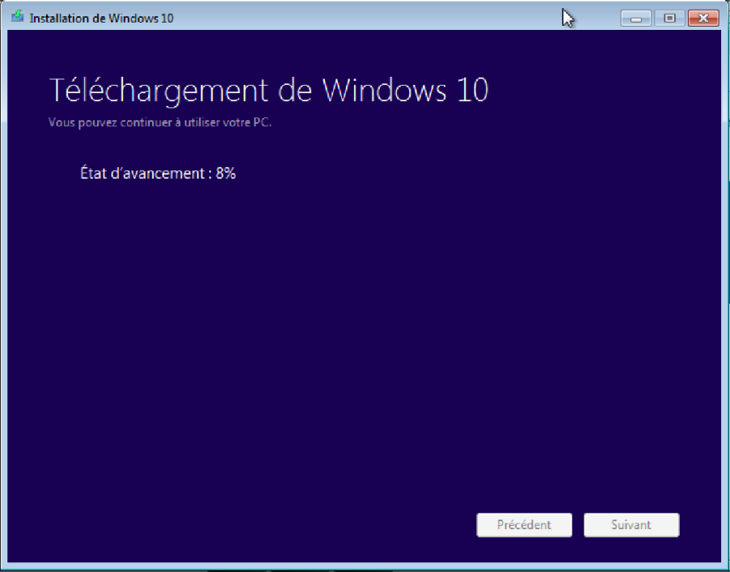

Comment mettre à niveau Windows 7 vers Windows 10 gratuitement
Faites la migration de votre PC Windows 7 ou Windows 8.1 vers Windows 10 gratuitement avant que Microsoft suspende le support de son ancien système d’exploitation pour de bon.
Alors que Microsoft à annoncer la fin du support de Windows 7 le 14 janvier dernier, les utilisateurs de cette version de Windows vont devoir prendre leurs dispositions pour s’assurer que leur machine ne soit pas vulnérable.
Plutôt que de passer à la caisse pour s’acquitter d’une licence de Windows 10, il est possible de procéder à la mise à niveau depuis Windows 7 sans dépenser un sou. Cette possibilité devait disparaître il y a déjà plusieurs mois, mais il semblerait que Microsoft ait conservé, peut-être intentionnellement, cette possibilité.
La mise à niveau vers Windows 10 fonctionne depuis un ordinateur sous Windows 7, mais fonctionne également sur les machines fonctionnant sous Windows 8 ou Windows 8.1.
1. Téléchargez l’utilitaire de mise à jour
Sur votre PC sous Windows 7, qui doit et devra être connecté à Internet, téléchargez l’outil de création de support pour Windows 10, proposé par Microsoft. L’utilitaire permet, en principe, de créer une clé USB démarrable grâce à laquelle il est possible d’installer ou réparer Windows 10 sur son PC. Le programme offre également la possibilité de mettre à niveau un PC exécutant une version antérieure à Windows 10.
2. Lancez la migration vers Windows 10
Ouvrez l’outil de création de support pour Windows 10 et patientez quelques instants le temps que l’utilitaire prépare certains éléments. Cliquez sur Accepter pour valider les conditions et patientez de nouveaux quelques secondes.

Lorsque la fenêtre Que voulez-vous faire ? apparaît, sélectionnez Mettre à niveau ce PC maintenant et cliquez sur Suivant.
L’utilitaire procède au téléchargement et à la vérification de Windows 10. L’outil indique ensuite procéder à la création d’un média Windows 10. Patientez plusieurs minutes jusqu’à ce que l’utilitaire procède à un nettoyage puis se relance.
Lorsque Windows 10 est prêt pour l’installation, la liste des éléments à conserver est affichée. Cliquez sur Installer pour continuer l’installation.
Au cours de l’installation de Windows 10, l’ordinateur redémarrera à plusieurs reprises.